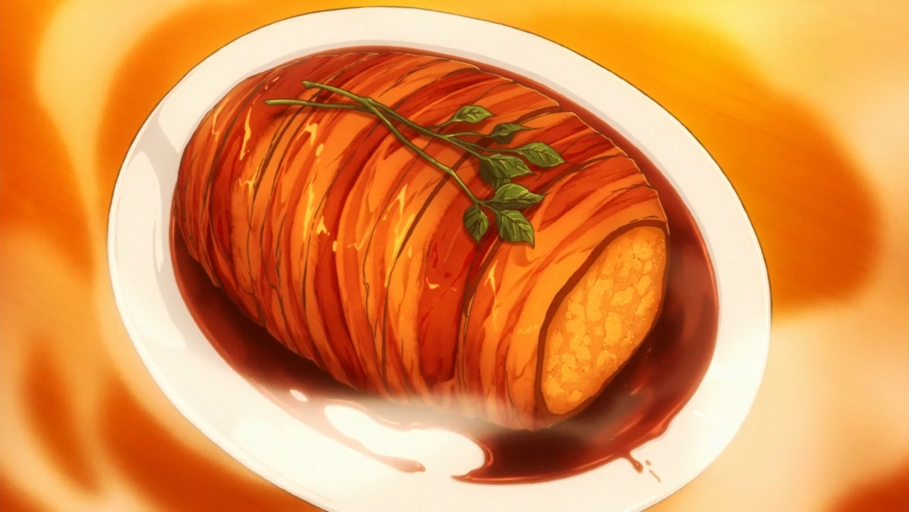

Gotcha Pork Roast

"I bet you thought this was pork, didn't you?
Ingredients
- 5-6 medium yukon gold potatoes
- ½ yellow onion, finely chopped
- 2 large king trumpet mushrooms, finely minced
- 2 cloves garlic, minced
- 4 Tbsp butter, cold + divided
- 1 Tbsp kosher salt
- 12-13 slices thick cut bacon, center-cut
- 4 sprigs rosemary, cut into 1-inch sections
- 150 ml red wine
- 75 ml sweet sake
- 10 ml soy sauce
- To garnish: watercress